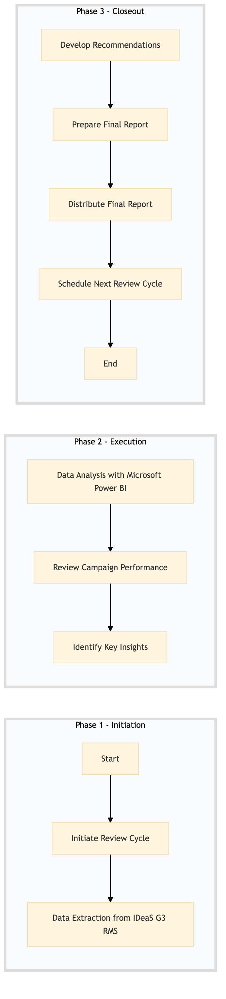

| Role | Steps |
|---|---|
| Marketing Manager | 1.1 2.2 3.1 3.3 3.4 |
| Revenue Manager | 1.2 |
| Marketing Analyst | 2.1 2.3 3.2 |
| Step | Name | Role | System | Input | Output | KPI | Dec? | Exc? | Pain Point / Risk |
|---|---|---|---|---|---|---|---|---|---|
| 1.1 | Initiate Review Cycle | Marketing Manager | Oracle OPERA Cloud | Monthly review schedule | Review cycle initiated in Oracle OPERA Cloud | Less than 5 minutes | N | N | Ensuring all relevant data is captured at the start of the review. |
| 1.2 | Data Extraction from IDeaS G3 RMS | Revenue Manager | IDeaS G3 RMS | Campaign performance data | Extracted data in CSV format | Less than 10 minutes | N | Y | Handling large datasets and ensuring accurate extraction. |
| 2.1 | Data Analysis with Microsoft Power BI | Marketing Analyst | Microsoft Power BI | Extracted data from IDeaS G3 RMS | Visualized reports and insights | Less than 20 minutes | N | Y | Interpreting complex data visualizations. |
| 2.2 | Review Campaign Performance | Marketing Manager | Microsoft Power BI | Visualized reports and insights | Campaign performance review notes | Less than 30 minutes | Y | N | Balancing time spent on detailed analysis. |
| 2.3 | Identify Key Insights | Marketing Analyst | Microsoft Power BI | Campaign performance review notes | Key insights document | Less than 15 minutes | N | Y | Extracting actionable insights from data. |
| 3.1 | Develop Recommendations | Marketing Manager | Oracle OPERA Cloud | Key insights document | Recommendations for future campaigns | Less than 25 minutes | Y | N | Aligning recommendations with hotel goals. |
| 3.2 | Prepare Final Report | Marketing Analyst | Microsoft Word | Recommendations for future campaigns | Final review report | Less than 45 minutes | N | Y | Formatting and presenting the report professionally. |
| 3.3 | Distribute Final Report | Marketing Manager | Oracle OPERA Cloud | Final review report | Report distributed to relevant stakeholders | Less than 10 minutes | N | N | Ensuring all stakeholders receive the report in a timely manner. |
| 3.4 | Schedule Next Review Cycle | Marketing Manager | Oracle OPERA Cloud | Final review report | Scheduled next review cycle | Less than 5 minutes | N | N | Maintaining a consistent review schedule. |
The SM-MK-07 Review Management process involves reviewing and analyzing marketing campaigns to optimize performance and drive guest satisfaction at a Marriott full-service hotel.